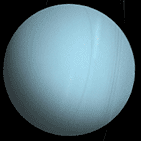
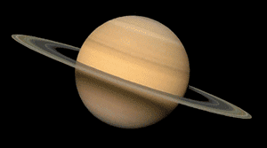
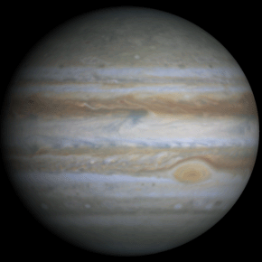
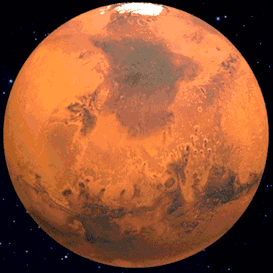
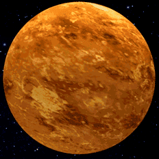
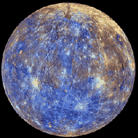
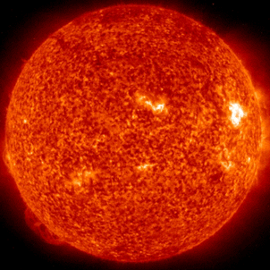
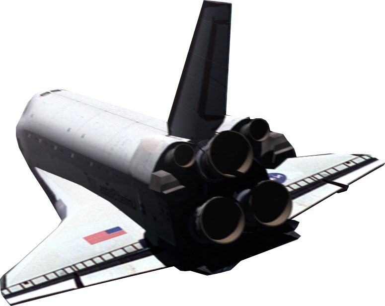

NEPTUNE
Neptune is 57.723x bigger than Earth!
One day on Neptune takes about 16 hours (the time it takes for Neptune to rotate or spin once).
Neptune makes a complete orbit around the sun (a year in Neptunian time) in about 165 Earth years (60,190 Earth days).
Neptune has 13 moons. Neptune's moons are named after various sea gods and nymphs in Greek mythology.
Neptune is 57.723x bigger than Earth!
One day on Neptune takes about 16 hours (the time it takes for Neptune to rotate or spin once).
Neptune makes a complete orbit around the sun (a year in Neptunian time) in about 165 Earth years (60,190 Earth days).
Neptune has 13 moons. Neptune's moons are named after various sea gods and nymphs in Greek mythology.

URANUS
Uranus is 63.085x bigger than Earth!
Uranus makes a complete orbit around the sun (a year in Uranian time) in about 84 Earth year.
Uranus has 27 moons. Uranus' moons are named after characters from the works of William Shakespeare and Alexander Pope.
Uranus is 63.085x bigger than Earth!
Uranus makes a complete orbit around the sun (a year in Uranian time) in about 84 Earth year.
Uranus has 27 moons. Uranus' moons are named after characters from the works of William Shakespeare and Alexander Pope.

SATURN
Saturn is 763.594x bigger than Earth!
Saturn is a gas-giant planet and therefore does not have a solid surface.
Saturn has 53 known moons with an additional nine moons awaiting confirmation of their discovery -- that is a total of 62 moons.
Saturn is 763.594x bigger than Earth!
Saturn is a gas-giant planet and therefore does not have a solid surface.
Saturn has 53 known moons with an additional nine moons awaiting confirmation of their discovery -- that is a total of 62 moons.

JUPITER
One day on Jupiter takes 10 hours.
Jupiter takes 12 earth-years to orbit around the Sun.
Jupiter is a gas-giant planet and therefore does not have a solid surface.
Jupiter may have a solid, inner core about the size of Earth.
One day on Jupiter takes 10 hours.
Jupiter takes 12 earth-years to orbit around the Sun.
Jupiter is a gas-giant planet and therefore does not have a solid surface.
Jupiter may have a solid, inner core about the size of Earth.

MARS
If the sun were as tall as a typical front door, Earth would be the size of a nickel, and Mars would be about as big as an aspirin tablet.
Several missions have visited this planet, from flybys and orbiters to rovers on the surface of the Red Planet. The first true Mars mission success was Mariner 4 in 1965.
Mars is known as the Red Planet because iron minerals in the Martian soil oxidize, or rust, causing the soil -- and the dusty atmosphere -- to look red.
If the sun were as tall as a typical front door, Earth would be the size of a nickel, and Mars would be about as big as an aspirin tablet.
Several missions have visited this planet, from flybys and orbiters to rovers on the surface of the Red Planet. The first true Mars mission success was Mariner 4 in 1965.
Mars is known as the Red Planet because iron minerals in the Martian soil oxidize, or rust, causing the soil -- and the dusty atmosphere -- to look red.

EARTH
If the sun were as tall as a typical front door, Earth would be the size of a nickel.
Many planets in our solar system have atmospheres, but only Earth's is breathable.
Earth has one moon. Another name for a moon is natural satellite.
If the sun were as tall as a typical front door, Earth would be the size of a nickel.
Many planets in our solar system have atmospheres, but only Earth's is breathable.
Earth has one moon. Another name for a moon is natural satellite.

VENUS
Venus is almost the same size as Earth. It is 0.857x the size of Earth.
Venus is named after the ancient Roman goddess of love and beauty.
There are volcanoes and mountains on the surface of Venus.
Venus is almost the same size as Earth. It is 0.857x the size of Earth.
Venus is named after the ancient Roman goddess of love and beauty.
There are volcanoes and mountains on the surface of Venus.

MERCURY
Mercury is .05 x the size of Earth! It’s the smallest plant in our solar system!
If you were standing on Mercury the Sun would look 3x larger than if you were standing on Earth!
Mercury has cliffs and valleys, similar to Earth!
Mercury is .05 x the size of Earth! It’s the smallest plant in our solar system!
If you were standing on Mercury the Sun would look 3x larger than if you were standing on Earth!
Mercury has cliffs and valleys, similar to Earth!

SUN
The Sun is a Star!
The Sun is 1,301,018 times larger than Earth!
The Sun makes life on Earth possible!
The Sun is a Star!
The Sun is 1,301,018 times larger than Earth!
The Sun makes life on Earth possible!
